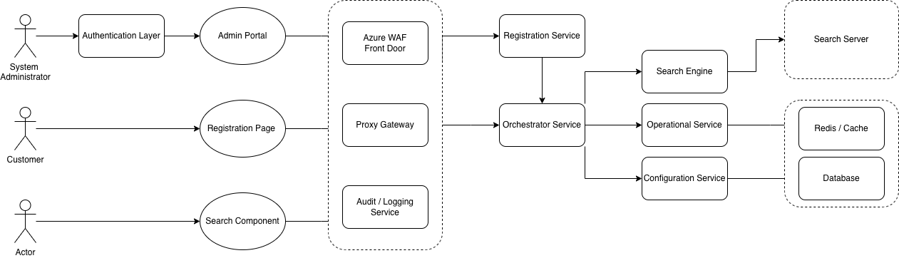

Centralized Governance
Unified authentication, rate limiting, and tenant validation at the gateway layer to reduce backend complexity and prevent security drift.
Decoupled Orchestration
Separated orchestration and query transformation from the search engine to enable independent scaling and protocol flexibility.
Infrastructure Efficiency
Balanced multi-tenant isolation and infrastructure costs through shard sizing strategies and hot/warm storage tiering.
Defense in Depth (Core Principle)
The system is designed with a layered security model. Each microservice is independently responsible for its own security controls, including auth validation, authorization checks, and input validation, ensuring a breach of one service does not lead to system-wide exploitation.
Zero Trust Between Services
No service is inherently trusted. All inter-service communication is authenticated and validated using secure identity propagation (JWT / service identity), ensuring strict boundary enforcement at runtime.
Blast Radius Containment
Services are designed to fail independently with strict isolation of data, cache, and execution context to minimize lateral movement in case of a security breach.
Design Philosophy & Evolution
Tập trung vào Centralized Governance. Thay vì để mỗi Microservice tự xử lý Auth và Rate Limit, chúng tôi đưa các logic này lên lớp Gateway để giảm thiểu Security Drift và tối ưu hóa Operational Economics (giảm Cognitive Load cho backend teams).
Non-Goals & Boundaries
Hệ thống hoàn toàn Stateless. Không thực hiện Query Optimization hay thay thế Service Mesh, mà tập trung bảo vệ North-South traffic và điều phối đa người thuê (Multi-tenant).
Lựa chọn Gateway Engine
Chọn YARP (Yet Another Reverse Proxy) để tích hợp trực tiếp vào ASP.NET pipeline. Cho phép sử dụng chung DI và Middleware, hỗ trợ logic Reactive Refresh mà các giải pháp khác khó thực hiện linh hoạt.
Chiến lược Caching
Sử dụng In-Memory Cache (15s) cục bộ để đạt Low-Latency (p99 < 1ms). Chấp nhận Node-local cache để đổi lấy sự đơn giản và tiết kiệm chi phí ở giai đoạn early scale.
Việc thay đổi Header trực tiếp trên instance HttpClient dùng chung dẫn đến rủi ro rò rỉ Token giữa các người dùng. Giải pháp: Chuyển đổi sang mô hình Immutable Request Messages (HttpRequestMessage).
Nguy cơ rò rỉ dữ liệu Cache nếu Key chỉ dựa trên URL. Giải pháp: Xây dựng Identity-Aware Cache Key bằng SHA256 băm từ URL + Payload + Identity Headers.
Resilience & Overload Shedding
Hỗ trợ Reactive Retry qua Request Buffering. Áp dụng Overload Shedding và cơ chế Backpressure với chuẩn RFC 7807 để ngăn chặn Cascading failures.
Service-Level Security Controls
Mỗi Microservice thực hiện các chốt chặn độc lập: authorization policies, input validation, schema enforcement, và rate limiting, không chỉ phụ thuộc vào Gateway.
Security Trust Model (Defense in Depth Enforcement)
Kết hợp giữa Edge-layer validation và Service-level enforcement. Mọi yêu cầu được xác thực tại nhiều lớp: Gateway (JWT/Rate Limit), Service boundary (AuthZ), và Internal logic (Policy checks), triệt tiêu rủi ro khi một lớp bị vượt qua.
| Metric / Platform | Target / Strategy |
|---|---|
| Gateway Overhead | p95 latency < 100ms (YARP Pipeline) |
| Availability | 99.9% Uptime (Stateless Kubernetes Scaling) |
| Error Consistency | 100% RFC 7807 (Unified traceId mapping) |
| Dynamic Config | Cloud-Native refresh via Steeltoe (No restart) |